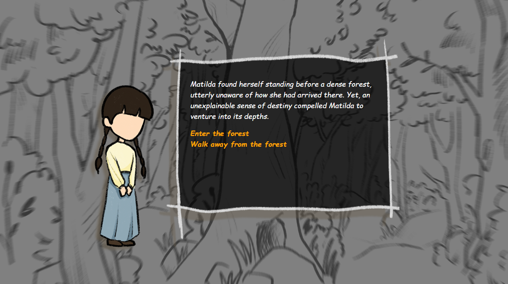
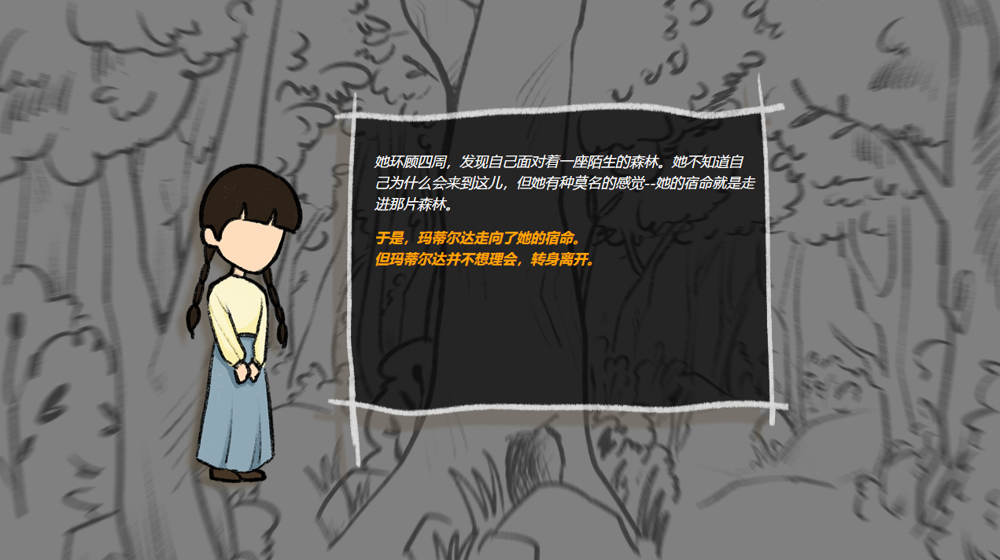

Description
During October 2023, me and Qizilan were given two weeks to make a narrative branching game with Twine.
This current version of Matilda has seven different endings. My contributions included idea generation, HTML & JavaScript
programming, passage implementation, music SFX editing, and video editing. Matilda can be played in English, and
Simplified Chinese.
Qizilan's Itch Page
Game (fullscreen disabled)
Showcase
Screenshots
|  |  |